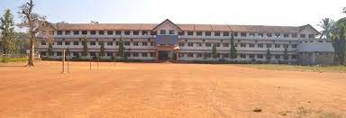
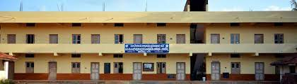
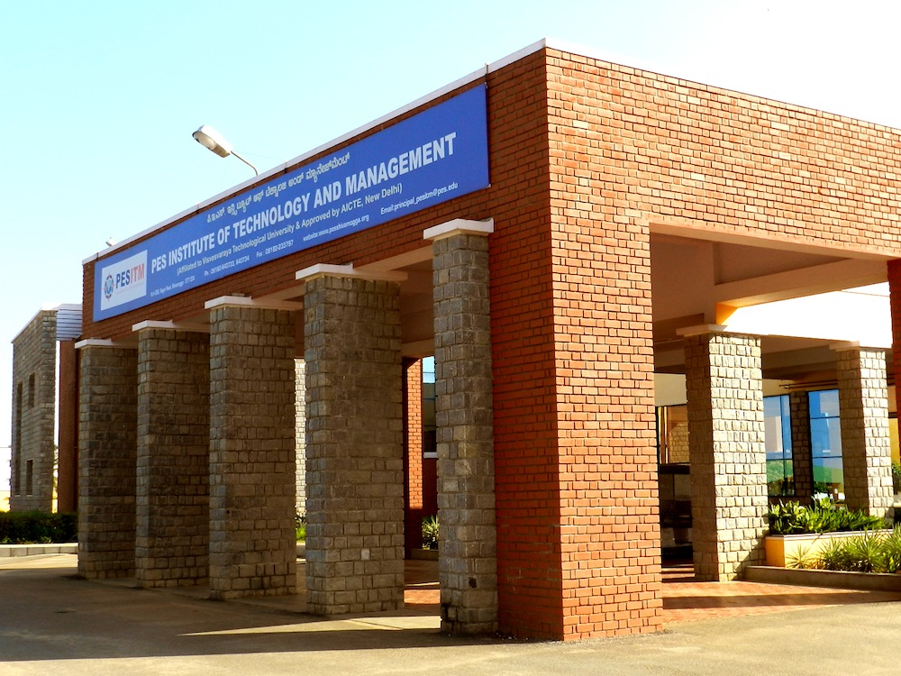

Welcome to my world
About Me
My name is Anagha Jois.I have lived in both Sagara and Keladi.Some of my favourite things to do
are listen to music,play cricket and ride my bike.These are the activities that I enjoy immensely and indulge in daily.
My career aspiration are to become either a entrepreneur or CEO of my own company.
Education
| Institution |
Qualification |
Percentage |
Year |
| Pragathi Composite School |
SSLC |
87.84 |
2015-16 |
| MDF College |
PUC |
71.33 |
2017-18 |
| PESITM |
BE(ISE) |
70 |
2018-22 |
About Institution Info
Pragathi Composite School

Pragathi composite school School has been started for the successor of Sagar Pranthya Vidya Vardhaka Sangha (R) Sagar a brain child of two enthusiastic youngster with the able guidance of Late Sri K.G.
Wodeyar was initiated to promote higher education in this part which was educationally backward.The result of the efforts is starting of Lalbahadur Arts, Science and S.B.
Solabanna Shetty Commerce College.The fast development of the college the impact of it made the office bearers of Malnad Development Foundation to think in terms of giving progressive education right from the child-hood.
They resolved to provide education from pre-primary section to graduate level, so that children can be moulded under one roof. The result of this right thinking is the starting of
Pragathi Composite School with great passion for bringing education for door steps needy and to the rural masses along with the dedicated team.
MDF College

Welcome to MDF Independent PU College. MDF Independent PU College has been
started for the successor of Sagar Pranthya Vidya Vardhaka Sangha (R) Sagar with a great vision of education for human excellence.
It is unlike any other colleges with various academic and co curricular activities.
PESITM

PES Institute of Technology and Management is an engineering and management college located in shimoga.
Currently offering in multitude of cources in engineering and management.It is established in 2007.This institute provides support to research and development activities.